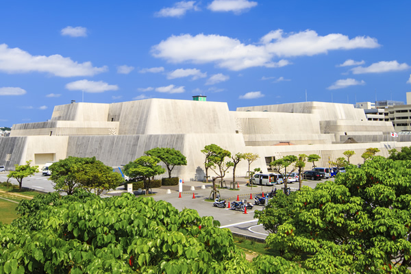
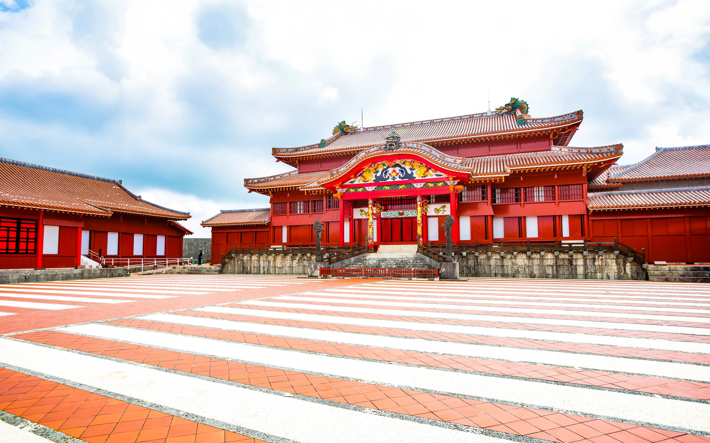
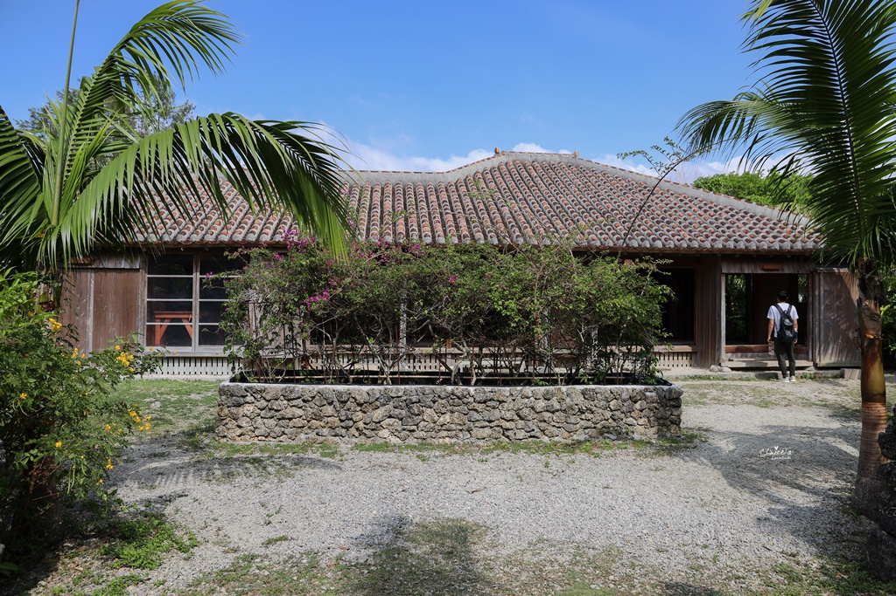
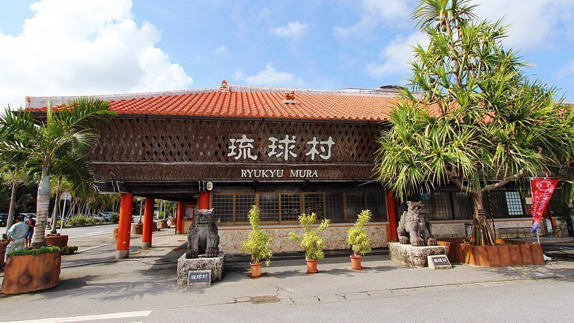
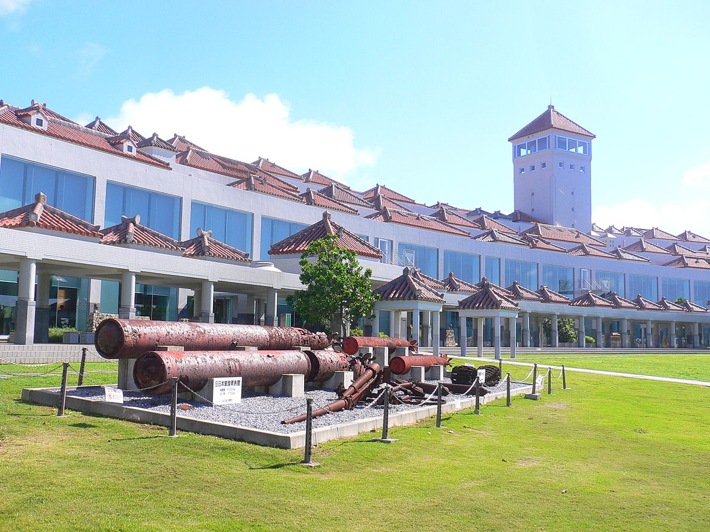
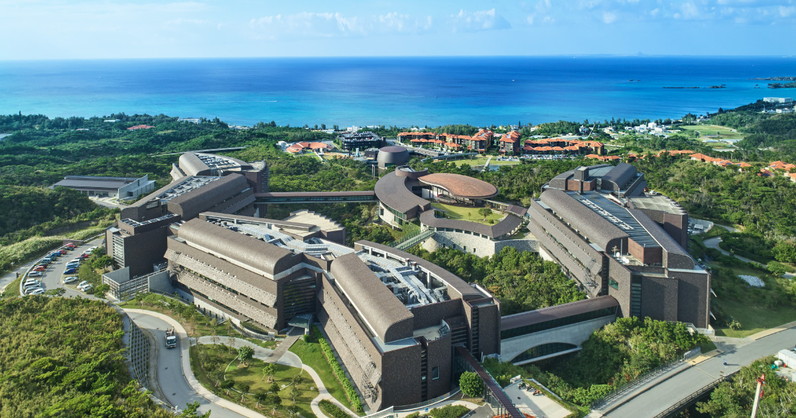
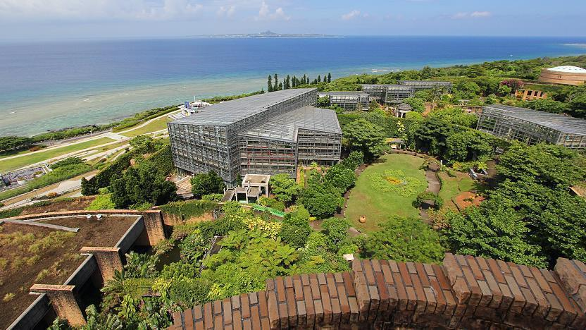
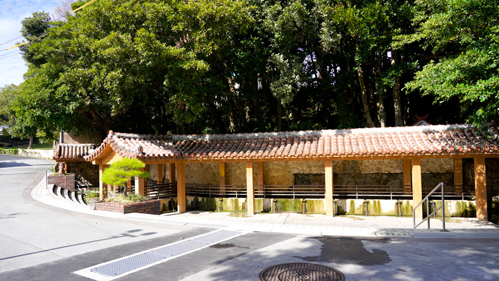

沖繩縣立博物館美術館
介紹：這是沖繩最大的博物館和美術館綜合體，展示了沖繩的自然歷史、文化遺產以及現代藝術。博物館部分有關於沖繩的自然史和文化史的常設展覽，而美術館部分則展示當地和國際藝術家的作品，定期舉辦特展。
地點：那霸市

首里城公園展覽
介紹：首里城是沖繩歷史的象徵，公園內定期舉辦各種歷史文化展覽，展示琉球王國時期的歷史文物、藝術品和建築特色。這些展覽為遊客提供深入了解琉球歷史和文化的機會。
地點：那霸市

沖繩民俗村
介紹：沖繩民俗村是一個展示沖繩傳統文化和工藝的主題公園。這裡有多個展覽館，展示琉球玻璃、染織、陶藝等傳統工藝，還有沖繩的傳統節慶和舞蹈表演。遊客可以親身體驗製作工藝品，並了解沖繩的民俗文化。
地點：南城市

琉球村展覽
介紹：琉球村是一個重現琉球王國時代生活風貌的文化主題公園，內有多個展覽展示沖繩傳統的農村生活、建築風格和工藝品。遊客可以參觀傳統民居，了解沖繩的歷史和文化。
地點：恩納村

沖繩平和祈念資料館
介紹：這個資料館致力於展示二戰期間沖繩的歷史，尤其是沖繩戰役。館內展示了大量的歷史照片、文物和個人故事，旨在教育公眾了解戰爭的影響，並傳遞和平的訊息。
地點：糸滿市

沖繩自然環境展示館
介紹：這個展示館專注於沖繩的自然環境和生態系統，展覽包括沖繩的動植物、海洋生態和環境保護措施。館內有互動展覽和教育活動，適合家庭和學校團體參觀。
地點：浦添市

沖繩海洋展示館
介紹：海洋展示館是美麗海水族館的一部分，展示了沖繩及其周邊海域的海洋生態和生物多樣性。這裡有關於珊瑚礁、海龜和各種海洋生物的展覽，還有海洋保護和研究的相關信息。
地點：本部町

那霸市歷史博物館
介紹：這個博物館專注於那霸市的歷史和發展，展示了那霸市從琉球王國時期到現代的變遷。館內有許多珍貴的歷史文物和文獻，展示了那霸市的豐富歷史。
地點：那霸市

金武町民俗資料館
介紹：這個資料館展示了金武町的傳統文化和民俗，包括農耕工具、漁具、民間工藝品和傳統服飾。遊客可以在這裡了解沖繩的農村生活和傳統習俗。
地點：金武町